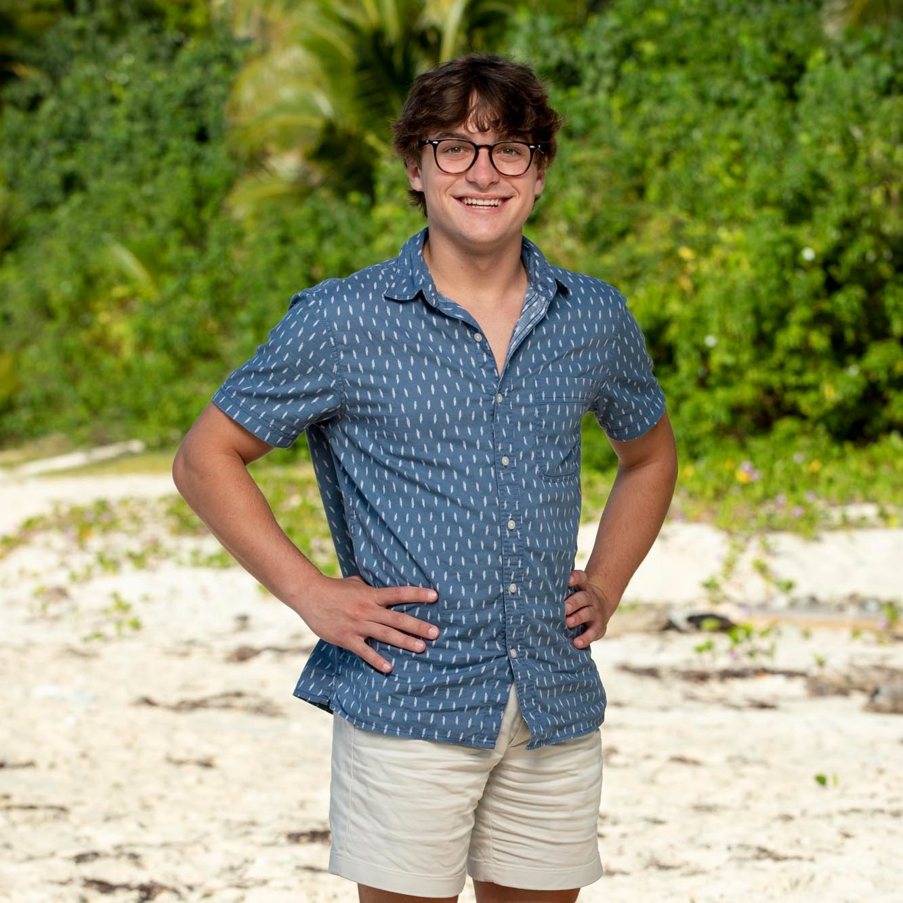

"Who will be the Sole Survivor!?"
Note: The two I want to win are outlined in purple.
Yam Yam

Pros
- Has made connections and friendships with most of the other players, guarenteeing at least some votes if he makes it to Final 3.
- Has had a very strong social game, being able to play many sides and sniff out lies.
- Voted out all threats that tried to eliminate him in the inital days of the Merge.
- Part of the strong, on-going Tika 3 alliance, with Carolyn and Carson.
- Won 1 individual immunity challenge.
Cons
- Even with 1 immunity win, hasn't been the strongest competitor for most of the season.
- Will need to differentiate his strategic game from the other Tika members, especially Carson who many perceive to be the strategic leader of the alliance.
Carson
Pros
- Has had the strongest strategic game of the final contestants.
- Won 1 individual immunity challenge.
- Most likely to win 1 or more challenges in the finale, being a well-rounded physical player and someone who excels at puzzle portions of challenges.
- Also has many positive social connections with the other players.
- Part of the strong, on-going Tika 3 alliance, with Carolyn and Yam Yam.
Cons
- Will need to differentiate his game from the other Tika members, who both have more vibrant personalities that may sway votes.
- Has a large target on his back, as he is perceived as the strategic leader of the Tika 3.
Carolyn

Pros
- The biggest personality and the face of Season 44.
- Has survived multiple attempts of elimination from the game.
- Part of the strong, on-going Tika 3 alliance, with Yam Yam and Carson.
- Of the Tika 3, Carolyn is perceived as the lowest threat, which would shield her from elimination at the tribal council of 5.
- Was able to keep a hidden immunity idol secret for the entire game.
Cons
- Her strong personality has also caused her to have some conflicts with other contestants.
- The weakest competitor of the final contestants and has no individual immunity challenge wins.
- Yam Yam has contemplated betraying the Tika 3 alliance to target her.
Lauren

Pros
- Has the most individual immunity challenge wins of the final contestants at 2.
- Strong competitor and can likely win 1 or more challenges in the finale.
- Has many friends currently in the jury.
- Final Ratu member in the game, which gives her survival credentials.
- Strong emotional core with single mother narrative.
Cons
- No true allies left in the game.
- The Tika 3 view her as more of a threat than Heidi, making her most likey to get voted out at the tribal council of 5 if she does not win immunity.
Heidi

Note: Heidi is the player I think is least likely to win of the final contestants.
Pros
- Physical player who can likely win 1 or more challenges in the finale.
- Of the final 5, we know Heidi is very competent at making fire, which may come into play if she ends up in the fire challenge.
- Final Soka member in the game, which gives her survival credentials.
- Has at least 1 guaranteed jury vote if she makes it to Final 3 (Danny).
- Strong life narrative.
Cons
- Has no individual immunity challenge wins.
- No true allies left in the game.
- Made a weak play with her hidden immunity idol.
- Has played mostly a very passive and defensive game.
- Does not have many social connections with the majority of the jury.